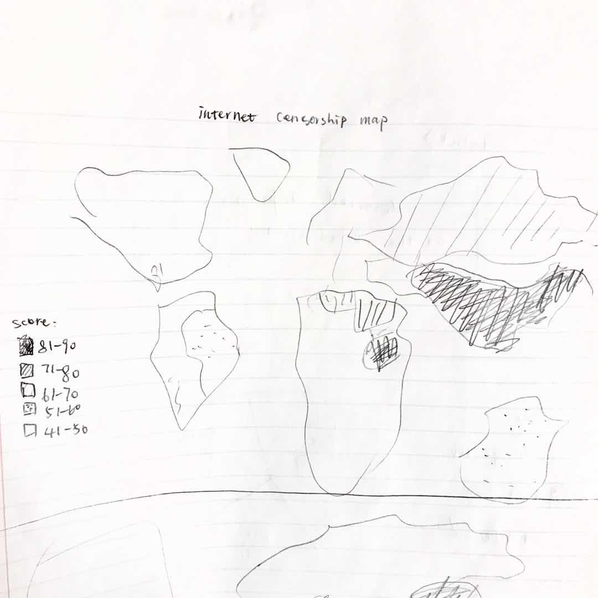
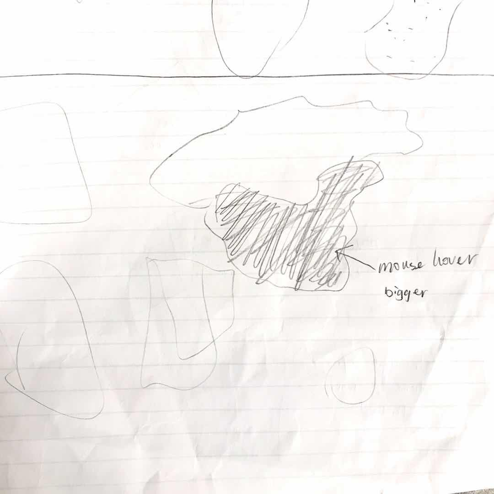
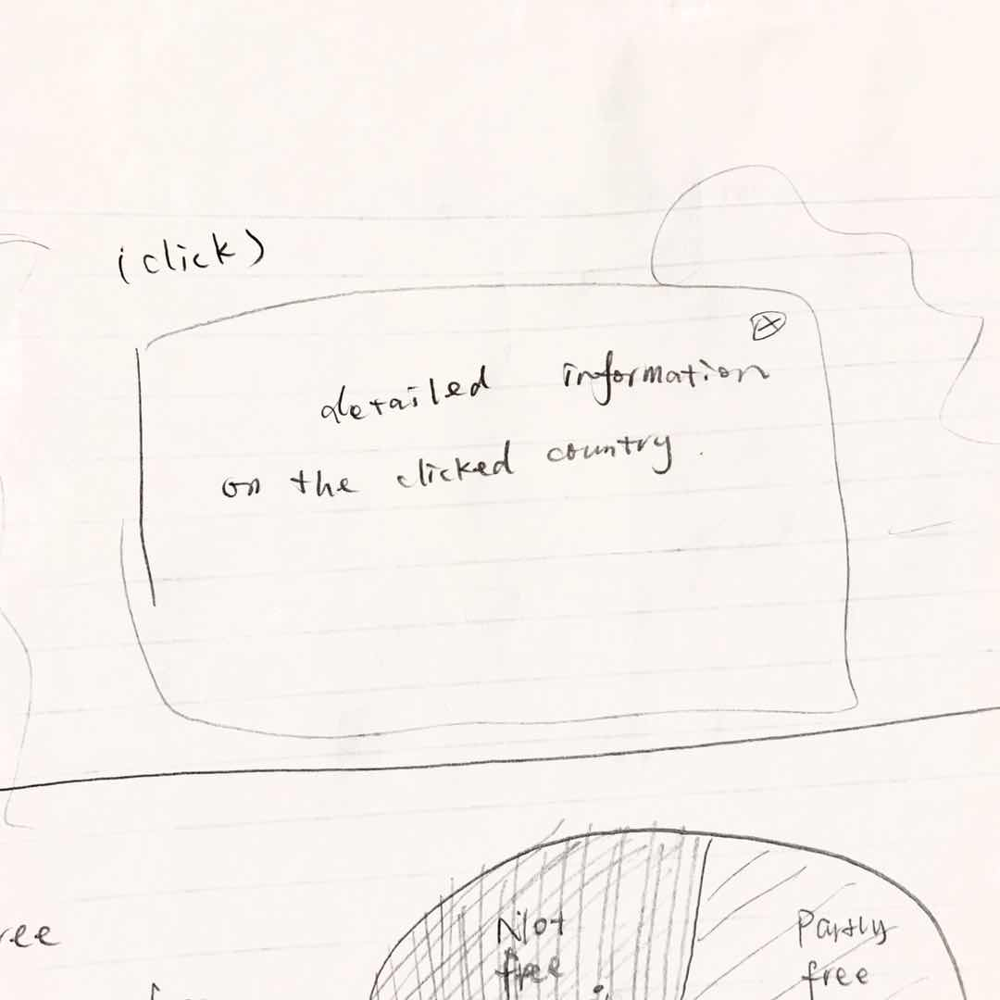
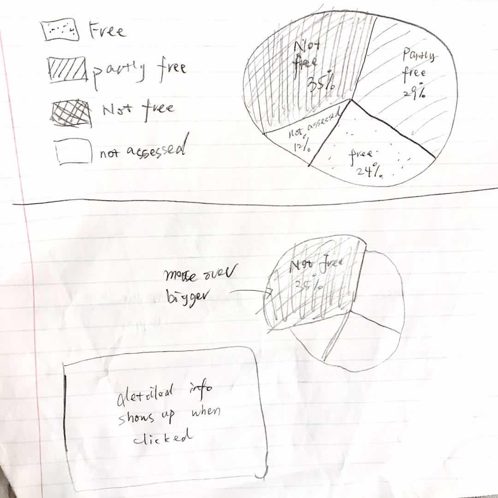

Stella Zhang
Paper Prototype
  This is an interactive map that showes the intensity of internect censorship around the world based on scores. Different score ranges are reprensented by different patterns. The shape of each country will become bigger when mouse hovered indicating users to click on it. When user clicks on a country, the detailed information about that country's internet censorship will show up in a pop-up window.
This pie chart shows the percentage of internet users that are under censorship control. Each slice will become bigger when mouse hovered indicating that it's clickable. When users click on each slice, more details about that section and the danger of internet censorship will be shown in a pop-up window.